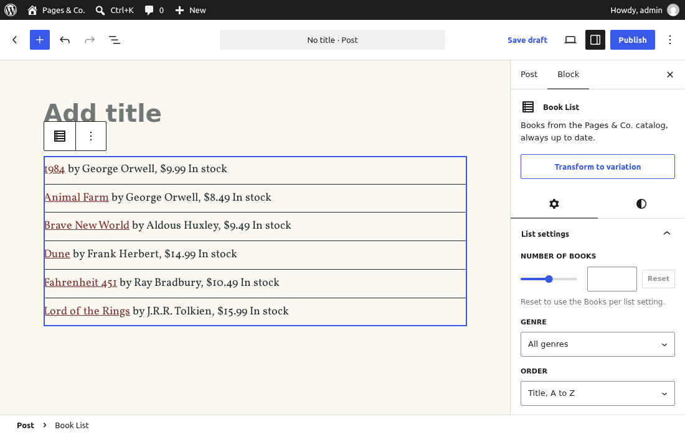
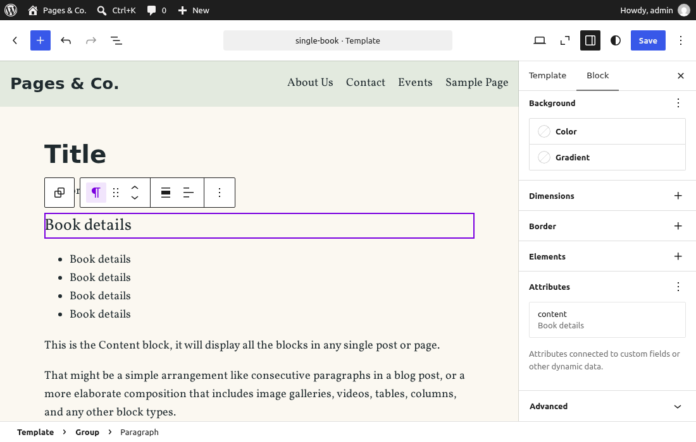

🔄 Lesson 6.3: Dynamic Blocks & Block Bindings
The Book Card from Lesson 6.2 stores its HTML in the post, which is perfect for a bookseller's words and wrong for anything that changes: change Dune's price and every stored copy of it is out of date. Today you build the other kind of block. The Book List asks the catalog for its books every time a page is viewed, through a PHP file you know how to write since Module 4. Then you go one step further and connect plain core blocks (a paragraph, a list item) to the book's own data with block bindings, so the shop's book pages show live prices without a single custom block.
🎯 Learning Objectives
By the end of this lesson, you will be able to:
- Explain when a block should be dynamic, and what a dynamic block stores in
post_content - Render a block on the server with
render.php: attributes, aWP_Querythroughget_posts(),get_block_wrapper_attributes(), and escaping - Preview a dynamic block in the editor with
ServerSideRender, and fill its controls from the REST API through@wordpress/core-data - Offer ready-made versions of a block as variations, generated in PHP
- Bind core blocks to post meta with
core/post-meta, and write a custom binding source withregister_block_bindings_source()
In This Lesson
🧊 Stored HTML Goes Stale
Lesson 3.3's featured-books pattern prints three staff picks with their prices on the front page, typed into the pattern file. Lesson 5.5's [pagesco_book id="30"] shortcode, in the "Book club: Dune" post, prints Dune's price too, but reads it from the book's meta on every view. Put Dune on sale for $12.99, as a bookseller would on the book's edit screen, and compare the two pages from the WP-CLI container:
wp post meta update 30 pagesco_price 12.99
curl -s http://localhost:8080/ | grep -A 10 '>Dune<' | grep -o '\$[0-9.]*'
curl -s http://localhost:8080/book-club-dune/ | grep -o 'pagesco-book__price">[^<]*'Output
Success: Updated custom field 'pagesco_price'.
$14.99
pagesco-book__price">$12.99The front page still says $14.99; the post says $12.99. The pattern's price was fixed when the pattern was written. A static block has the same problem one level down: its HTML is fixed when the post is saved, which is why Lesson 6.2's Book Card holds no price. Put the price back:
wp post meta update 30 pagesco_price 14.99Output
Success: Updated custom field 'pagesco_price'.A dynamic block works like the shortcode, with a block's editing experience. Its save returns nothing, so the post stores only the comment, for example <!-- wp:pagesco/book-list {"genre":"fantasy"} /-->. On every page view, WordPress finds the comment, and runs your PHP with the attributes to produce the HTML.
💡 Mental model: the printed card and the departure board
A static block is a printed card: the shop prints it once, and it says the same thing until someone reprints it. A dynamic block is a station's departure board: what is stored is only "show the next trains from platform 2", and the board looks up the timetable whenever someone glances at it. The post keeps the instruction (the comment and its attributes); your render.php is the board.
| Static (Lesson 6.2) | Dynamic (this lesson) | |
|---|---|---|
| Stored in the post | comment + finished HTML | comment only |
| HTML made by | save() in the editor, once | render.php on the server, every view |
| Changing the markup later | needs a deprecation | just edit render.php; every page follows |
| Plugin deactivated | stored HTML still shows | the block shows nothing |
| Good for | what an editor writes | data that lives elsewhere: lists, prices, stock, the current user |
🏗️ Scaffolding a Dynamic Block
Lesson 6.1's create-block command with one more option, --variant dynamic. Run it in the plugin's folder, wordpress/wp-content/plugins/pagesco-books:
npx @wordpress/create-block@latest book-list --no-plugin --variant dynamic --target-dir=src/blocks/book-list --namespace=pagesco --textdomain=pagesco-books --short-description="Books from the Pages & Co. catalog, always up to date."Output
...
Creating a "block.json" file.
...
Code is PoetryAs in Lesson 6.1, the ... lines name the folder on your computer. What it wrote:
cd wp-content/plugins/pagesco-books/src/blocks/book-list
ls
grep -E '"(render|viewScript)"' block.json
cat render.phpOutput
block.json edit.js editor.scss index.js render.php style.scss view.js
"render": "file:./render.php",
"viewScript": "file:./view.js"
<?php
/**
* PHP file to use when rendering the block type on the server to show on the front end.
*
* The following variables are exposed to the file:
* $attributes (array): The block attributes.
* $content (string): The block default content.
* $block (WP_Block): The block instance.
*
* @see https://github.com/WordPress/gutenberg/blob/trunk/docs/reference-guides/block-api/block-metadata.md#render
*/
?>
<p <?php echo get_block_wrapper_attributes(); ?>>
<?php esc_html_e( 'Book List – hello from a dynamic block!', 'pagesco-books' ); ?>
</p>Compared with the static scaffold of Lesson 6.1, three things differ:
- There is no
save.js, andindex.jsregisters onlyedit. A block withoutsavesaves nothing but its comment. block.jsonhas"render": "file:./render.php". When WordPress registers the block fromblock.json, this line turns the PHP file into the block's render callback: on each view WordPress includes the file inside a function, with the three variables the comment lists, and uses whatever it prints (an output buffer catches it, soechois right here, unlike in a shortcode).render.phpstarts the wrapper withget_block_wrapper_attributes(), the PHP twin ofuseBlockProps.save(): the block's classwp-block-pagesco-book-listplus whatever block supports add (colors, spacing). It returns attributes that are already escaped, which is why core's own blocks, and this file, print it without another escaping function.
Like the Book Card, the list needs no JavaScript on the front end and no editor-only styles. Delete view.js and editor.scss (and their lines in block.json, next).
rm wp-content/plugins/pagesco-books/src/blocks/book-list/view.js wp-content/plugins/pagesco-books/src/blocks/book-list/editor.scss🖨️ render.php: The Book List on the Server
The shop's Book List has three attributes, all settings, so none has a source: they live in the comment, where PHP can read them (Lesson 6.2). count has no default on purpose: a list without a count uses the Books per list setting from Lesson 5.4, so the shop can change every default-length list on the site from one screen. genre is a term slug, empty for all genres. orderBy has an enum, the three orders the list knows. Replace src/blocks/book-list/block.json:
{
"$schema": "https://schemas.wp.org/trunk/block.json",
"apiVersion": 3,
"name": "pagesco/book-list",
"version": "0.1.0",
"title": "Book List",
"category": "widgets",
"icon": "list-view",
"description": "Books from the Pages & Co. catalog, always up to date.",
"keywords": [ "books", "catalog", "prices" ],
"textdomain": "pagesco-books",
"attributes": {
"count": {
"type": "integer"
},
"genre": {
"type": "string",
"default": ""
},
"orderBy": {
"type": "string",
"enum": [ "title", "newest", "price" ],
"default": "title"
}
},
"supports": {
"html": false,
"color": {
"background": true,
"text": true,
"link": true
},
"spacing": {
"margin": true,
"padding": true
},
"typography": {
"fontSize": true
}
},
"example": {
"attributes": {
"count": 3
}
},
"editorScript": "file:./index.js",
"style": "file:./style-index.css",
"render": "file:./render.php"
}Same supports as the card, a list-view icon, an example for the inserter preview, and no editorStyle or viewScript. Now the PHP. Replace src/blocks/book-list/render.php:
<?php
/**
* Renders the Book List block on the server, every time a page with the block is viewed.
*
* WordPress includes this file inside a function and passes three variables:
* $attributes (array): the block's attributes, with the defaults from block.json filled in.
* $content (string): the block's saved inner HTML (empty: this block saves nothing).
* $block (WP_Block): the block instance (name, context, parsed block).
*
* @package PagesCo\Books
*/
use PagesCo\Books\BookPostType;
use PagesCo\Books\GenreTaxonomy;
use PagesCo\Books\Settings;
use PagesCo\Books\Shortcodes\BookShortcode;
// No count in the block: use the Books per list setting (Lesson 5.4). Either way, 1 to 24.
$count = isset( $attributes['count'] ) ? absint( $attributes['count'] ) : (int) Settings::get( 'books_per_page' );
$count = min( 24, max( 1, $count ) );
$query_args = array(
'post_type' => BookPostType::NAME,
'post_status' => 'publish',
'posts_per_page' => $count,
'orderby' => 'title',
'order' => 'ASC',
);
if ( 'newest' === $attributes['orderBy'] ) {
$query_args['orderby'] = 'date';
$query_args['order'] = 'DESC';
} elseif ( 'price' === $attributes['orderBy'] ) {
$query_args['meta_key'] = 'pagesco_price';
$query_args['orderby'] = 'meta_value_num';
}
if ( '' !== $attributes['genre'] ) {
$query_args['tax_query'] = array(
array(
'taxonomy' => GenreTaxonomy::NAME,
'field' => 'slug',
'terms' => sanitize_key( $attributes['genre'] ),
),
);
}
$books = get_posts( $query_args );
if ( ! $books ) {
printf(
'<p %1$s>%2$s</p>',
get_block_wrapper_attributes(),
esc_html__( 'No books match this list yet.', 'pagesco-books' )
);
return;
}
$card = new BookShortcode();
?>
<ul <?php echo get_block_wrapper_attributes(); ?>>
<?php foreach ( $books as $book ) : ?>
<li class="wp-block-pagesco-book-list__item"><?php echo wp_kses_post( $card->render( array( 'id' => $book->ID ) ) ); ?></li>
<?php endforeach; ?>
</ul>Read it top to bottom; most of it is Module 4 and Module 5:
uselines.render.phpis a plain PHP file in the plugin, so it can use the plugin's classes. Composer's autoloader (Lesson 5.1) loads them, and the constantsBookPostType::NAMEandGenreTaxonomy::NAMEkeep the names in one place.- The count.
isset()tells "no count chosen" from a chosen one; thenSettings::get( 'books_per_page' )from Lesson 5.4, and a clamp to 1–24, the same range the setting allows. Attributes come from post content, which editors, imports and scripts write, so treat them as input: cast, check, limit. - The query. Lesson 4.2's
WP_Queryarguments, throughget_posts(). It returns post objects and leaves the global$postalone, so there is no Loop to reset, which matters inside a block that may sit in the middle of someone else's Loop. It also loads the books' meta in one query, so the per-bookget_post_meta()calls cost nothing.meta_value_numsorts the price as a number (Lesson 5.2's Going Further), and the genre filter is atax_queryon the slug, sanitized withsanitize_key(). - The markup. Each book is printed by Lesson 5.5's
BookShortcode::render(), as that lesson promised: one function formats a book's line for the shortcode and the block alike. Its output is escaped inside, andwp_kses_post()escapes it again where it is printed: escape late, every time, even your own HTML. The empty case prints a sentence withesc_html__(). returnin the middle of an included file stops the file, not the request: the "no books" paragraph is all that block prints.- The variables (
$count,$books…) live inside the function WordPress wraps around the file, so they need no prefix and cannot clash with other blocks.
The styles. Replace src/blocks/book-list/style.scss:
.wp-block-pagesco-book-list {
list-style: none;
padding-left: 0;
}
.wp-block-pagesco-book-list__item {
padding: 0.5rem 0;
border-bottom: 1px solid currentColor;
}
.wp-block-pagesco-book-list__item:last-child {
border-bottom: 0;
}In the editor, the simplest honest preview of a dynamic block is the real thing: ServerSideRender, from @wordpress/server-side-render, asks the server to run render.php with the block's current attributes and shows the result (the next section looks at the request). Replace src/blocks/book-list/edit.js with a first version, and src/blocks/book-list/index.js without the scaffold's comments:
import { useBlockProps } from '@wordpress/block-editor';
import ServerSideRender from '@wordpress/server-side-render';
export default function Edit( { attributes } ) {
return (
<div { ...useBlockProps() }>
<ServerSideRender
block="pagesco/book-list"
attributes={ attributes }
skipBlockSupportAttributes
/>
</div>
);
}import { registerBlockType } from '@wordpress/blocks';
import './style.scss';
import Edit from './edit';
import metadata from './block.json';
registerBlockType( metadata.name, {
edit: Edit,
} );Build. The build copies render.php next to block.json in build/blocks/book-list/, because block.json names it:
npm run build > /dev/null
ls build/blocks/book-listOutput
block.json
index.asset.php
index.js
render.php
style-index-rtl.css
style-index.cssNo PHP change: the Blocks feature from Lesson 6.1 registers whatever the manifest lists. Check that WordPress sees a dynamic block:
wp eval '$type = WP_Block_Type_Registry::get_instance()->get_registered( "pagesco/book-list" );
echo $type->title, ": ", $type->is_dynamic() ? "dynamic" : "static", "\n";
echo implode( ", ", array_keys( $type->get_attributes() ) ), "\n";'Output
Book List: dynamic
count, genre, orderBy, lock, metadata, className, style, backgroundColor, textColor, fontSizeTry it
Create a page "List test" with two Book Lists: one as inserted, one with the genre Fantasy and the order "price". The stored content, as the Code editor shows it, is nothing but comments:
<!-- wp:pagesco/book-list /-->
<!-- wp:pagesco/book-list {"genre":"fantasy","orderBy":"price"} /-->http://localhost:8080/list-test/ (View Source: the two lists)Output
<ul class="wp-block-pagesco-book-list">
<li class="wp-block-pagesco-book-list__item"><span class="pagesco-book"><a href="http://localhost:8080/books/1984/">1984</a> by George Orwell, <span class="pagesco-book__price">$9.99</span> <span class="pagesco-book__stock">In stock</span></span></li>
<li class="wp-block-pagesco-book-list__item"><span class="pagesco-book"><a href="http://localhost:8080/books/animal-farm/">Animal Farm</a> by George Orwell, <span class="pagesco-book__price">$8.49</span> <span class="pagesco-book__stock">In stock</span></span></li>
<li class="wp-block-pagesco-book-list__item"><span class="pagesco-book"><a href="http://localhost:8080/books/brave-new-world/">Brave New World</a> by Aldous Huxley, <span class="pagesco-book__price">$9.49</span> <span class="pagesco-book__stock">In stock</span></span></li>
<li class="wp-block-pagesco-book-list__item"><span class="pagesco-book"><a href="http://localhost:8080/books/dune/">Dune</a> by Frank Herbert, <span class="pagesco-book__price">$14.99</span> <span class="pagesco-book__stock">In stock</span></span></li>
<li class="wp-block-pagesco-book-list__item"><span class="pagesco-book"><a href="http://localhost:8080/books/fahrenheit-451/">Fahrenheit 451</a> by Ray Bradbury, <span class="pagesco-book__price">$10.49</span> <span class="pagesco-book__stock">In stock</span></span></li>
<li class="wp-block-pagesco-book-list__item"><span class="pagesco-book"><a href="http://localhost:8080/books/lord-of-the-rings/">Lord of the Rings</a> by J.R.R. Tolkien, <span class="pagesco-book__price">$15.99</span> <span class="pagesco-book__stock">In stock</span></span></li>
</ul>
<ul class="wp-block-pagesco-book-list">
<li class="wp-block-pagesco-book-list__item"><span class="pagesco-book"><a href="http://localhost:8080/books/the-hobbit/">The Hobbit</a> by J.R.R. Tolkien, <span class="pagesco-book__price">$10.99</span> <span class="pagesco-book__stock">In stock</span></span></li>
<li class="wp-block-pagesco-book-list__item"><span class="pagesco-book"><a href="http://localhost:8080/books/lord-of-the-rings/">Lord of the Rings</a> by J.R.R. Tolkien, <span class="pagesco-book__price">$15.99</span> <span class="pagesco-book__stock">In stock</span></span></li>
</ul>Six books in title order, because the first list has no count and the setting's default is 6; then the two Fantasy books, cheapest first. Now let the shop change its mind on Settings > Pages & Co. Books: Books per list 4. From the command line that is the whole option as JSON (Lesson 5.4's Common Mistake 3: a partial array would wipe the other keys), then the count of list items on the page:
wp option update pagesco_books_settings '{"notice_extra":"Open until 9 p.m. on Thursdays.","show_events_link":true,"books_per_page":4,"events_limit":5}' --format=json
curl -s http://localhost:8080/list-test/ | grep -c '<li class="wp-block-pagesco-book-list__item'
wp option delete pagesco_books_settingsOutput
Success: Updated 'pagesco_books_settings' option.
6
Success: Deleted 'pagesco_books_settings' option.Four plus two: the first list followed the setting without anyone touching the page, and the Fantasy list, which has two books, is unchanged. Deleting the option brings back the defaults, as at the end of Lesson 5.5.
🎛️ The Book List in the Editor
The list needs the same kind of sidebar as the Book Card: a number, a genre and an order. Two things are new. The genre choices are not fixed: they are the shop's genre terms, which only the database knows. And the number has no default, so the control must be able to say "nothing chosen". Replace src/blocks/book-list/edit.js:
import { __ } from '@wordpress/i18n';
import { InspectorControls, useBlockProps } from '@wordpress/block-editor';
import { PanelBody, RangeControl, SelectControl } from '@wordpress/components';
import { useSelect } from '@wordpress/data';
import { store as coreStore } from '@wordpress/core-data';
import ServerSideRender from '@wordpress/server-side-render';
export default function Edit( { attributes, setAttributes } ) {
const { count, genre, orderBy } = attributes;
// The genre terms, from the REST API (/wp/v2/genres), cached by the editor.
const genres = useSelect(
( select ) =>
select( coreStore ).getEntityRecords( 'taxonomy', 'genre', {
per_page: -1,
} ),
[]
);
const genreOptions = [
{ label: __( 'All genres', 'pagesco-books' ), value: '' },
...( genres || [] ).map( ( term ) => ( {
label: term.name,
value: term.slug,
} ) ),
];
return (
<>
<InspectorControls>
<PanelBody title={ __( 'List settings', 'pagesco-books' ) }>
<RangeControl
__next40pxDefaultSize
label={ __( 'Number of books', 'pagesco-books' ) }
help={ __(
'Reset to use the Books per list setting.',
'pagesco-books'
) }
value={ count }
onChange={ ( value ) => setAttributes( { count: value } ) }
min={ 1 }
max={ 24 }
allowReset
/>
<SelectControl
__next40pxDefaultSize
label={ __( 'Genre', 'pagesco-books' ) }
value={ genre }
options={ genreOptions }
onChange={ ( value ) => setAttributes( { genre: value } ) }
/>
<SelectControl
__next40pxDefaultSize
label={ __( 'Order', 'pagesco-books' ) }
value={ orderBy }
options={ [
{ label: __( 'Title, A to Z', 'pagesco-books' ), value: 'title' },
{ label: __( 'Newest first', 'pagesco-books' ), value: 'newest' },
{ label: __( 'Price, low to high', 'pagesco-books' ), value: 'price' },
] }
onChange={ ( value ) => setAttributes( { orderBy: value } ) }
/>
</PanelBody>
</InspectorControls>
<div { ...useBlockProps() }>
<ServerSideRender
block="pagesco/book-list"
attributes={ attributes }
skipBlockSupportAttributes
/>
</div>
</>
);
}useSelect()and@wordpress/core-data. The editor keeps a data store of WordPress records, fetched from the REST API and cached.getEntityRecords( 'taxonomy', 'genre', … )reads the genre terms from/wp/v2/genres(Lesson 5.2 setshow_in_restandrest_base); it returnsnulluntil the answer arrives, hencegenres || [], and the component redraws when it does. Module 7 looks at the REST API itself.RangeControlwithallowReset. A slider plus a number field and a Reset button. Reset setscountback toundefined, so the attribute disappears from the comment and the setting applies again.ServerSideRender. Every attribute change asks the server for a new preview.skipBlockSupportAttributesleaves the color and spacing classes out of that request, becauseuseBlockProps()already puts them on the wrapperdiv.
npm run build > /dev/nullInsert a Book List in a new post. The canvas shows the real list, rendered by your PHP, and the sidebar's Settings tab shows the panel; the genre menu lists the five genres from the database. (The Transform to variation button above the tabs comes from the next section.)

render.php, the genres from the REST API.What does ServerSideRender actually ask? The browser's Network tab shows a request to the block-renderer route of the REST API, with the attributes in the query string. You can send it yourself (logged in, because only users who can edit posts may render blocks this way):
http://localhost:8080/wp-json/wp/v2/block-renderer/pagesco/book-list?context=edit&attributes[genre]=fantasy&attributes[orderBy]=priceOutput
{
"rendered": "<ul class=\"wp-block-pagesco-book-list\">\n\t\t\t<li class=\"wp-block-pagesco-book-list__item\"><span class=\"pagesco-book\"><a href=\"http://localhost:8080/books/the-hobbit/\">The Hobbit</a> by J.R.R. Tolkien, <span class=\"pagesco-book__price\">$10.99</span> <span class=\"pagesco-book__stock\">In stock</span></span></li>\n\t\t\t<li class=\"wp-block-pagesco-book-list__item\"><span class=\"pagesco-book\"><a href=\"http://localhost:8080/books/lord-of-the-rings/\">Lord of the Rings</a> by J.R.R. Tolkien, <span class=\"pagesco-book__price\">$15.99</span> <span class=\"pagesco-book__stock\">In stock</span></span></li>\n\t</ul>\n"
}The same HTML as on the front end, wrapped in JSON. The REST API also checks the attributes against block.json before it renders; an orderBy outside the enum gets a 400 error, which is one more reason to declare types and enums carefully.
⚠️ Previews cost a request each
ServerSideRender is the quickest way to an accurate preview, and core's own Archives and Calendar blocks use it. Each change of an attribute sends a request (debounced), and a slow render.php makes a sluggish editor. For blocks that editors change a lot, the alternative is to build the preview in React from data the editor already has (as core's Query Loop does with core-data). For a list of a few books, the server preview is right.
🧬 Variations: Ready-Made Book Lists
An editor who wants "our fantasy books" should not have to insert a Book List and then find the genre menu. A block variation is a named preset of an existing block: its own title, description and icon in the inserter, and a set of attribute values. Core uses them everywhere: the Embed block's YouTube and Vimeo entries, and the Group block's Row and Stack, are variations. Variations can be written as a fixed list in block.json, or, since WordPress 6.7, generated by a PHP file that block.json names in its variations field. A PHP file can ask the database, so the shop gets one variation per genre, plus a fixed "New Arrivals". Create src/blocks/book-list/variations.php:
<?php
/**
* Variations of the Book List: "New Arrivals", and one list per genre.
*
* WordPress requires this file only when someone asks for the block's variations
* (the editor does, through the REST API), not on every page view.
*
* @package PagesCo\Books
*/
use PagesCo\Books\GenreTaxonomy;
$variations = array(
array(
'name' => 'new-arrivals',
'title' => __( 'New Arrivals', 'pagesco-books' ),
'description' => __( 'The three books most recently added to the catalog.', 'pagesco-books' ),
'icon' => 'star-filled',
'attributes' => array(
'count' => 3,
'orderBy' => 'newest',
),
'scope' => array( 'inserter' ),
),
);
$genres = get_terms(
array(
'taxonomy' => GenreTaxonomy::NAME,
'hide_empty' => false,
)
);
foreach ( is_array( $genres ) ? $genres : array() as $genre ) {
$variations[] = array(
'name' => 'genre-' . $genre->slug,
/* translators: %s: genre name, such as Fantasy. */
'title' => sprintf( __( '%s Books', 'pagesco-books' ), $genre->name ),
/* translators: %s: genre name, such as Fantasy. */
'description' => sprintf( __( 'Books in the %s genre.', 'pagesco-books' ), $genre->name ),
'attributes' => array( 'genre' => $genre->slug ),
'isActive' => array( 'genre' ),
'scope' => array( 'inserter', 'transform' ),
);
}
return $variations;attributesare what the variation sets when inserted; anything else keeps its default.isActivetells the editor how to recognize the variation in an existing block: a list whosegenreisfantasyshows "Fantasy Books" as its title in the sidebar and List View.scope:inserterlists it in the inserter;transformalso offers it in the block's variation switcher, so a list can become another genre's list.- WordPress requires the file only when something asks for the variations (the editor does, through the block-types REST route), not on every front-end view, so the database query here costs the visitors nothing.
Add the field after render in src/blocks/book-list/block.json; the end of the file becomes:
"render": "file:./render.php",
"variations": "file:./variations.php"
}cd wp-content/plugins/pagesco-books/src/blocks/book-list
sed -i 's|^\t"render": "file:./render.php"$|\t"render": "file:./render.php",\n\t"variations": "file:./variations.php"|' block.json
tail -n 4 block.jsonOutput
"style": "file:./style-index.css",
"render": "file:./render.php",
"variations": "file:./variations.php"
}npm run build > /dev/null
ls build/blocks/book-listOutput
block.json
index.asset.php
index.js
render.php
style-index-rtl.css
style-index.css
variations.phpThe build copied variations.php too; @wordpress/scripts copies the PHP files that block.json names in render and variations. Ask the registered type for its variations:
<?php
$type = WP_Block_Type_Registry::get_instance()->get_registered( 'pagesco/book-list' );
foreach ( $type->get_variations() as $variation ) {
echo $variation['name'], ': ', $variation['title'], ' ', wp_json_encode( $variation['attributes'] ), "\n";
}Output
new-arrivals: New Arrivals {"count":3,"orderBy":"newest"}
genre-classic: Classic Books {"genre":"classic"}
genre-dystopian: Dystopian Books {"genre":"dystopian"}
genre-fantasy: Fantasy Books {"genre":"fantasy"}
genre-fiction: Fiction Books {"genre":"fiction"}
genre-science-fiction: Science Fiction Books {"genre":"science-fiction"}In the editor, type "fantasy" in the inserter: "Fantasy Books" appears with the Book List's icon. Add a genre on Books > Genres and the next editor load offers its list too, with no rebuild. Remove the script: rm list-variations.php.
rm list-variations.php🔗 Block Bindings: Core Blocks, Live Data
The Book List is a custom block because a list of books is something core does not have. A book's own page is different: it needs an author line, a price, a few facts. Paragraphs and lists can display those perfectly well, if only their text came from the book's meta instead of being typed. That is what block bindings do (WordPress 6.5 and later): a block's attribute is bound to a source, and on every view WordPress replaces the attribute's value with the source's value. In the block comment it looks like this:
<!-- wp:paragraph {"metadata":{"bindings":{"content":{"source":"core/post-meta","args":{"key":"pagesco_author"}}}}} -->
<p>Author</p>
<!-- /wp:paragraph -->The paragraph's content is bound to the source core/post-meta, with the argument key. The stored "Author" is a fallback that shows only when the source has nothing to say. Bindings live in the metadata attribute that every block has (you met it in Lesson 6.2's attribute list), so the block itself needs no code at all.
💡 Mental model: the price gun and the shelf label
A bound block is a shelf label with an empty slot: the label's design (the paragraph, its font size, its color) is fixed in the template, and the slot says "price of the book on this shelf". The source is the clerk who fills the slot from the stock system every time a customer looks. Change the design without touching the data, or the data without touching the design.
Which blocks and attributes can be bound is a fixed list in core, which get_block_bindings_supported_attributes() returns and the block_bindings_supported_attributes filter can extend:
wp eval 'foreach ( array( "core/paragraph", "core/heading", "core/list-item", "core/image", "core/button" ) as $name ) { echo $name, ": ", implode( ", ", get_block_bindings_supported_attributes( $name ) ), "\n"; }'Output
core/paragraph: content
core/heading: content
core/list-item: content
core/image: id, url, title, alt, caption
core/button: url, text, linkTarget, relPlus core/post-date (datetime) and the navigation link and submenu blocks (url). Core registers four sources; ask the registry:
wp eval 'foreach ( get_all_registered_block_bindings_sources() as $name => $source ) { echo $name, " (", $source->label, ")\n"; }'Output
core/pattern-overrides (Pattern Overrides)
core/post-data (Post Data)
core/post-meta (Post Meta)
core/term-data (Term Data)core/post-meta reads a meta key of the current post; core/post-data reads fields of the post itself (date, modified, link); core/term-data the same for terms; core/pattern-overrides powers the per-instance text in synced patterns (Lesson 3.3's Exercise 4).
🧩 Version note: list items need WordPress 7.1
Bindings arrived in 6.5 for paragraphs, headings, images and buttons; 6.9 added core/post-data, core/term-data, the post date and navigation links, and the filter. List items joined in 7.1. On a 6.8 to 7.0 site, the list-item bindings below print their fallback text ("Price", "Pages") instead of the data, without an error. If your plugin must support those versions, bind paragraphs instead of list items.
core/post-meta on the book pages
The book pages use single.html today (Lesson 3.1's hierarchy: single-book.html would win, but the theme has none), so they show a title, a date and an empty content area. Create wordpress/wp-content/themes/pagesco/templates/single-book.html, a first version that binds an author paragraph and three list items to book meta:
<!-- wp:template-part {"slug":"header","tagName":"header"} /-->
<!-- wp:group {"tagName":"main","style":{"spacing":{"padding":{"top":"var:preset|spacing|medium","bottom":"var:preset|spacing|large"}}},"layout":{"type":"constrained"}} -->
<main class="wp-block-group" style="padding-top:var(--wp--preset--spacing--medium);padding-bottom:var(--wp--preset--spacing--large)">
<!-- wp:post-title {"level":1} /-->
<!-- wp:paragraph {"metadata":{"bindings":{"content":{"source":"core/post-meta","args":{"key":"pagesco_author"}}}},"className":"pagesco-book-author"} -->
<p class="pagesco-book-author">Author</p>
<!-- /wp:paragraph -->
<!-- wp:list {"className":"pagesco-book-facts"} -->
<ul class="wp-block-list pagesco-book-facts"><!-- wp:list-item {"metadata":{"bindings":{"content":{"source":"core/post-meta","args":{"key":"pagesco_price"}}}}} -->
<li>Price</li>
<!-- /wp:list-item -->
<!-- wp:list-item {"metadata":{"bindings":{"content":{"source":"core/post-meta","args":{"key":"pagesco_in_stock"}}}}} -->
<li>In stock</li>
<!-- /wp:list-item -->
<!-- wp:list-item {"metadata":{"bindings":{"content":{"source":"core/post-meta","args":{"key":"pagesco_pages"}}}}} -->
<li>Pages</li>
<!-- /wp:list-item --></ul>
<!-- /wp:list -->
<!-- wp:post-content {"layout":{"type":"constrained"}} /-->
</main>
<!-- /wp:group -->
<!-- wp:template-part {"slug":"footer","tagName":"footer"} /-->http://localhost:8080/books/the-great-gatsby/ (View Source: main)Output
<main id="wp--skip-link--target" class="wp-block-group has-global-padding is-layout-constrained wp-block-group-is-layout-constrained" style="padding-top:var(--wp--preset--spacing--medium);padding-bottom:var(--wp--preset--spacing--large)">
<h1 class="wp-block-post-title">The Great Gatsby</h1>
<p class="pagesco-book-author wp-block-paragraph">F. Scott Fitzgerald</p>
<ul class="wp-block-list pagesco-book-facts">
<li>8.99</li>
<li></li>
<li>180</li>
</ul>
</main>The binding worked, and that is the problem: core/post-meta returns the raw stored value. The price has no dollar sign, and the stock, a boolean, is false for Gatsby, which arrives as an empty string and leaves an empty list item (Dune's would say 1). Binding is not formatting. core/post-meta also only reads keys that are registered with show_in_rest and not protected (no leading underscore): that is why Lesson 5.2 registered the book meta the way it did. For formatted values, the plugin registers its own source.
A custom source: pagesco/book
register_block_bindings_source( $name, $args ) on init takes a namespaced name, a label, a get_value_callback and the uses_context it needs. The callback gets the binding's args, the WP_Block being rendered and the attribute's name, and returns the value, or null to leave the fallback alone. It is a feature of the plugin like any other (Lesson 5.1's rule: one class, one line). Create src/BookBindings.php:
<?php
/**
* The pagesco/book block bindings source: book details, formatted for the shop.
*
* @package PagesCo\Books
*/
namespace PagesCo\Books;
/**
* Lets core blocks show a book's price, stock, pages, year and genres, formatted.
*/
final class BookBindings implements Feature {
/**
* The source's name, as blocks refer to it in metadata.bindings.
*/
public const SOURCE = 'pagesco/book';
/**
* Registers the source on init, like core registers core/post-meta.
*/
public function register(): void {
add_action( 'init', array( $this, 'register_source' ) );
}
/**
* Tells WordPress about the source: its label, its callback, and the context it needs.
*/
public function register_source(): void {
register_block_bindings_source(
self::SOURCE,
array(
'label' => __( 'Book details', 'pagesco-books' ),
'get_value_callback' => array( $this, 'get_value' ),
'uses_context' => array( 'postId', 'postType' ),
)
);
}
/**
* Returns the value for one bound attribute, or null to keep the block's own content.
*
* @param array $source_args The binding's args, for example array( 'field' => 'price' ).
* @param \WP_Block $block_instance The block being rendered; its context names the post.
* @return string|null
*/
public function get_value( array $source_args, $block_instance ) {
$book_id = (int) ( $block_instance->context['postId'] ?? 0 );
if ( ! $book_id || BookPostType::NAME !== get_post_type( $book_id ) ) {
return null;
}
// The same rule as core/post-meta: never reveal a book the visitor could not read.
if ( ! is_post_publicly_viewable( $book_id ) && ! current_user_can( 'read_post', $book_id ) ) {
return null;
}
switch ( $source_args['field'] ?? '' ) {
case 'price':
return esc_html( '$' . number_format_i18n( (float) get_post_meta( $book_id, 'pagesco_price', true ), 2 ) );
case 'stock':
return get_post_meta( $book_id, 'pagesco_in_stock', true )
? esc_html__( 'In stock', 'pagesco-books' )
: esc_html__( 'Sold out', 'pagesco-books' );
case 'pages':
$pages = (int) get_post_meta( $book_id, 'pagesco_pages', true );
/* translators: %s: number of pages. */
return esc_html( sprintf( _n( '%s page', '%s pages', $pages, 'pagesco-books' ), number_format_i18n( $pages ) ) );
case 'year':
$published = (string) get_post_meta( $book_id, 'pagesco_published', true );
/* translators: %s: a year, such as 1965. */
return '' === $published ? null : esc_html( sprintf( __( 'First published in %s', 'pagesco-books' ), substr( $published, 0, 4 ) ) );
case 'genres':
$genres = get_the_term_list( $book_id, GenreTaxonomy::NAME, '', ', ' );
return is_string( $genres ) ? $genres : null;
}
return null;
}
}uses_contextasks WordPress to pass thepostIdandpostTypeof the post being shown to every block bound to this source, even blocks that do not ask for context themselves. A paragraph never asks forpostIdon its own: without this line the price paragraph prints its fallback, "Price", with no error.- The visibility check copies
core/post-meta's rule. A binding can sit anywhere a block can, including a page that shows another post's blocks; never let a source leak a draft's or a private book's data to a visitor who could not open it. - The values. One
fieldargument, five fields; the formatting is the shop's (number_format_i18n(),_n()for "1 page" and "412 pages"), escaped as it is built.genresreturns links fromget_the_term_list(), which are HTML: WordPress passes every bound value throughwp_kses_post()before it goes into the block, so simple markup survives and scripts do not.
Make it the plugin's fourteenth feature, after Blocks (in your editor; here with sed), and list the sources again:
sed -i '/\t\t\tBlocks::class,/a\ BookBindings::class,' wp-content/plugins/pagesco-books/src/Plugin.php
grep -c "::class," wp-content/plugins/pagesco-books/src/Plugin.php
wp eval 'foreach ( get_all_registered_block_bindings_sources() as $name => $source ) { echo $name, " (", $source->label, ")\n"; }'Output
14
core/pattern-overrides (Pattern Overrides)
core/post-data (Post Data)
core/post-meta (Post Meta)
core/term-data (Term Data)
pagesco/book (Book details)No build: this is PHP only. The project rewrites single-book.html with the new source. Before that, one more look at the safety net. Suppose a careless import wrote a script into Gatsby's author field (WP-CLI and the REST API do not run the meta box's sanitizing from Lesson 5.3):
wp post meta update 33 pagesco_author 'F. Scott Fitzgerald<script>alert(1)</script>'
curl -s http://localhost:8080/books/the-great-gatsby/ | grep 'pagesco-book-author'
wp eval 'echo ( new PagesCo\Books\Shortcodes\BookShortcode() )->render( array( "id" => 33 ) ), "\n";'
wp post meta update 33 pagesco_author 'F. Scott Fitzgerald'Output
Success: Updated custom field 'pagesco_author'.
<p class="pagesco-book-author wp-block-paragraph">F. Scott Fitzgeraldalert(1)</p>
<span class="pagesco-book"><a href="http://localhost:8080/books/the-great-gatsby/">The Great Gatsby</a> by F. Scott Fitzgerald<script>alert(1)</script>, <span class="pagesco-book__price">$8.99</span> <span class="pagesco-book__stock">Sold out</span></span>
Success: Updated custom field 'pagesco_author'.The bound paragraph lost the <script> tags to wp_kses_post(); BookShortcode::render(), which prints every line of the Book List, turned them into harmless text with esc_html(). Two different filters, the same result: nothing runs. The last command restores the author.

In the Site Editor (Appearance > Editor > Templates, "single-book"), a template is not about one book, so bound blocks show a label instead of a value: the meta field's registered label ("Author") for core/post-meta, the source's label ("Book details") for pagesco/book. Select one and the sidebar's Attributes panel lists what is connected. A source registered only in PHP is enough for the front end; a JavaScript registration with registerBlockBindingsSource() from @wordpress/blocks can show real values in the editor too (Going Further).
⚠️ Common Mistakes
1. An attribute without a default, read without a check
count has no default, so it is simply missing from $attributes when nobody chose a number. A shorter version of the count line looks tempting:
$count = absint( $attributes['count'] ) ?: (int) Settings::get( 'books_per_page' );Put it into src/blocks/book-list/render.php (here with sed, keeping a copy), build, and load the List test page:
cd wp-content/plugins/pagesco-books/src/blocks/book-list
cp render.php render.php.bak
sed -i "s/isset( \$attributes\['count'\] ) ? absint( \$attributes\['count'\] ) : (int)/absint( \$attributes['count'] ) ?: (int)/" render.php
grep -n '^\$count = absint' render.phpOutput
19:$count = absint( $attributes['count'] ) ?: (int) Settings::get( 'books_per_page' );npm run build > /dev/nullcurl -s http://localhost:8080/list-test/ | grep 'Warning'Error
Warning: Undefined array key “count” in /var/www/html/wp-content/plugins/pagesco-books/build/blocks/book-list/render.php on line 19What it means: the first list has no count key, and PHP 8 warns about reading a missing array key. The list still renders (the ?: falls back to the setting), so in production, with display off, you would only find it in debug.log, once per view. With display on, the message lands in the middle of the page, inside the post content, where WordPress's typography filter even turned its quotes into curly ones (“): output from render.php is part of the content. WordPress fills in defaults for attributes that have one, and nothing for the rest. Notice also the path: build/blocks/book-list/render.php, the copy WordPress runs, not the one you edit. Fix: check optional attributes with isset() or ??, or give them a default. Restore the course version and rebuild:
mv wp-content/plugins/pagesco-books/src/blocks/book-list/render.php.bak wp-content/plugins/pagesco-books/src/blocks/book-list/render.phpnpm run build > /dev/null2. A quick fix in build/
The warning above names build/blocks/book-list/render.php, so that is the file a hurried developer opens. Say they add a class to every item there, check the page, and move on:
cd wp-content/plugins/pagesco-books
sed -i 's/wp-block-pagesco-book-list__item"/wp-block-pagesco-book-list__item is-hotfix"/' build/blocks/book-list/render.php
curl -s http://localhost:8080/list-test/ | grep -c 'is-hotfix'Output
8It works: eight items, eight classes. The next day someone builds the plugin for an unrelated change:
npm run build > /dev/nullcurl -s http://localhost:8080/list-test/ | grep -c 'is-hotfix'Output
0What it means: the build empties build/blocks/ and copies render.php from src/ again (Lesson 6.1), so the fix is gone, silently, and grep -c finds nothing (and exits with status 1). PHP files are no exception to the kit-workshop-shelf rule just because they need no compiling. Fix: edit src/blocks/book-list/render.php only, then build (or keep npm start running, which copies PHP changes too).
3. A binding that quietly does nothing
Bindings fail silently by design: when a source returns null, the block keeps its fallback text, and a visitor would just see a page with the word "Author" on it. Misspell the key in the template (keeping a copy) and look at Dune's page:
cd wp-content/themes/pagesco/templates
cp single-book.html single-book.html.bak
sed -i 's/"key":"pagesco_author"/"key":"pagesco_writer"/' single-book.html
curl -s http://localhost:8080/books/dune/ | grep 'pagesco-book-author'
mv single-book.html.bak single-book.html
curl -s http://localhost:8080/books/dune/ | grep 'pagesco-book-author'Output
<p class="pagesco-book-author wp-block-paragraph">Author</p>
<p class="pagesco-book-author wp-block-paragraph">Frank Herbert</p>What it means: core/post-meta returns null for a key it will not read: one that does not exist, one that is not registered with show_in_rest, or a protected one starting with an underscore. No notice, no log line. Fix: use exactly the keys from BookMeta::fields(); when a bound block shows its fallback, check the key with get_registered_meta_keys( 'post', 'book' ) first. Choose fallback texts that look wrong on a live page ("Author" rather than an empty paragraph), so a broken binding is noticed rather than hidden.
🛠️ Project: Book Pages with Live Details
Every book in the shop gets a proper page: the author, a large price, the stock, genres, pages and year, and the three newest books underneath, all from data, with no content typed into any book. Allow about 35 minutes.
🛠️ Step 1: The book template (15 min)
Replace wordpress/wp-content/themes/pagesco/templates/single-book.html. The author stays on core/post-meta (a plain string needs no formatting); the price paragraph and the four facts use pagesco/book; and under the content, a heading and the New Arrivals variation of the Book List (inserted from the inserter, it is exactly this comment):
<!-- wp:template-part {"slug":"header","tagName":"header"} /-->
<!-- wp:group {"tagName":"main","style":{"spacing":{"padding":{"top":"var:preset|spacing|medium","bottom":"var:preset|spacing|large"}}},"layout":{"type":"constrained"}} -->
<main class="wp-block-group" style="padding-top:var(--wp--preset--spacing--medium);padding-bottom:var(--wp--preset--spacing--large)">
<!-- wp:post-title {"level":1} /-->
<!-- wp:paragraph {"metadata":{"bindings":{"content":{"source":"core/post-meta","args":{"key":"pagesco_author"}}}},"className":"pagesco-book-author"} -->
<p class="pagesco-book-author">Author</p>
<!-- /wp:paragraph -->
<!-- wp:paragraph {"metadata":{"bindings":{"content":{"source":"pagesco/book","args":{"field":"price"}}}},"fontSize":"large"} -->
<p class="has-large-font-size">Price</p>
<!-- /wp:paragraph -->
<!-- wp:list {"className":"pagesco-book-facts"} -->
<ul class="wp-block-list pagesco-book-facts"><!-- wp:list-item {"metadata":{"bindings":{"content":{"source":"pagesco/book","args":{"field":"stock"}}}}} -->
<li>Stock</li>
<!-- /wp:list-item -->
<!-- wp:list-item {"metadata":{"bindings":{"content":{"source":"pagesco/book","args":{"field":"genres"}}}}} -->
<li>Genres</li>
<!-- /wp:list-item -->
<!-- wp:list-item {"metadata":{"bindings":{"content":{"source":"pagesco/book","args":{"field":"pages"}}}}} -->
<li>Pages</li>
<!-- /wp:list-item -->
<!-- wp:list-item {"metadata":{"bindings":{"content":{"source":"pagesco/book","args":{"field":"year"}}}}} -->
<li>First published</li>
<!-- /wp:list-item --></ul>
<!-- /wp:list -->
<!-- wp:post-content {"layout":{"type":"constrained"}} /-->
<!-- wp:heading {"level":2} -->
<h2 class="wp-block-heading">New in the shop</h2>
<!-- /wp:heading -->
<!-- wp:pagesco/book-list {"count":3,"orderBy":"newest"} /-->
</main>
<!-- /wp:group -->
<!-- wp:template-part {"slug":"footer","tagName":"footer"} /-->A theme file using a plugin's block and source is a fair dependency here, because both belong to the same shop. Should the plugin ever be off, the Book List prints nothing and the bound blocks print their fallback text; the page still works.
🛠️ Step 2: Check two books (10 min)
Dune is in stock; The Great Gatsby is sold out:
http://localhost:8080/books/dune/ (View Source: main)Output
<main id="wp--skip-link--target" class="wp-block-group has-global-padding is-layout-constrained wp-block-group-is-layout-constrained" style="padding-top:var(--wp--preset--spacing--medium);padding-bottom:var(--wp--preset--spacing--large)">
<h1 class="wp-block-post-title">Dune</h1>
<p class="pagesco-book-author wp-block-paragraph">Frank Herbert</p>
<p class="has-large-font-size wp-block-paragraph">$14.99</p>
<ul class="wp-block-list pagesco-book-facts">
<li>In stock</li>
<li><a href="http://localhost:8080/genre/fiction/" rel="tag">Fiction</a>, <a href="http://localhost:8080/genre/science-fiction/" rel="tag">Science Fiction</a></li>
<li>412 pages</li>
<li>First published in 1965</li>
</ul>
<h2 class="wp-block-heading">New in the shop</h2>
<ul class="wp-block-pagesco-book-list">
<li class="wp-block-pagesco-book-list__item"><span class="pagesco-book"><a href="http://localhost:8080/books/animal-farm/">Animal Farm</a> by George Orwell, <span class="pagesco-book__price">$8.49</span> <span class="pagesco-book__stock">In stock</span></span></li>
<li class="wp-block-pagesco-book-list__item"><span class="pagesco-book"><a href="http://localhost:8080/books/fahrenheit-451/">Fahrenheit 451</a> by Ray Bradbury, <span class="pagesco-book__price">$10.49</span> <span class="pagesco-book__stock">In stock</span></span></li>
<li class="wp-block-pagesco-book-list__item"><span class="pagesco-book"><a href="http://localhost:8080/books/lord-of-the-rings/">Lord of the Rings</a> by J.R.R. Tolkien, <span class="pagesco-book__price">$15.99</span> <span class="pagesco-book__stock">In stock</span></span></li>
</ul>
</main>http://localhost:8080/books/the-great-gatsby/ (View Source: the facts list)Output
<ul class="wp-block-list pagesco-book-facts">
<li>Sold out</li>
<li><a href="http://localhost:8080/genre/classic/" rel="tag">Classic</a>, <a href="http://localhost:8080/genre/fiction/" rel="tag">Fiction</a></li>
<li>180 pages</li>
<li>First published in 1925</li>
</ul>The fallback texts ("Price", "Stock"…) are gone from the HTML: visitors and search engines get finished markup, and none of it is stored in the book posts. The same template serves all eleven books, and the twelfth the shop adds tomorrow.
🛠️ Step 3: Prove it is live, clean up, check (10 min)
Put Dune on sale once more, and read its price from its own page and from the List test page; then restore it, delete the List test page, and check the plugin:
wp post meta update 30 pagesco_price 12.99 > /dev/null
curl -s http://localhost:8080/books/dune/ | grep -o 'has-large-font-size wp-block-paragraph">[^<]*'
curl -s http://localhost:8080/list-test/ | grep -o 'Dune</a> by Frank Herbert, <span class="pagesco-book__price">[^<]*'
wp post meta update 30 pagesco_price 14.99 > /dev/null
wp post delete $(wp post list --post_type=page --name=list-test --field=ID) --force > /dev/null
ls wp-content/plugins/pagesco-books/src/blocks/book-list wp-content/themes/pagesco/templates
grep -c "::class," wp-content/plugins/pagesco-books/src/Plugin.phpOutput
has-large-font-size wp-block-paragraph">$12.99
Dune</a> by Frank Herbert, <span class="pagesco-book__price">$12.99
wp-content/plugins/pagesco-books/src/blocks/book-list:
block.json edit.js index.js render.php style.scss variations.php
wp-content/themes/pagesco/templates:
404.html archive.html front-page.html index.html page.html search.html single-book.html single.html
14One meta update, every page right. In pagesco-plan.txt, under "Blocks", note: "Book List (dynamic, 6.3): render.php + get_posts, default count = Books per list; variations per genre. Book pages: templates/single-book.html, bindings core/post-meta + pagesco/book (BookBindings feature)."
✅ Project Completion Checklist
src/blocks/book-list/holdsblock.json,index.js,edit.js,render.php,style.scssandvariations.php, with nosave.jsand noview.js- A Book List without a count shows as many books as the Books per list setting says
- The inserter offers New Arrivals and one variation per genre
BookBindingsis the plugin's fourteenth feature and registerspagesco/book- Every book page shows its author, price, stock, genres, pages and year from its meta, and three new arrivals
- The List test page is deleted and Dune costs $14.99 again
🏋️ Hands-on Exercises
Each exercise leaves the site as the project did. Try each one before you open the solution.
🏋️ Exercise 1: Test a Binding Without a Browser
Print every book's title and its formatted price as pagesco/book renders it, by rendering a bound paragraph in PHP for each book, without any template.
💡 Hint
parse_blocks() turns the paragraph's markup into a parsed block. new WP_Block( $parsed, $context ) takes the context as its second argument: array( 'postId' => …, 'postType' => 'book' ). ->render() processes the bindings; wp_strip_all_tags() leaves the text.
✅ Solution
<?php
$markup = '<!-- wp:paragraph {"metadata":{"bindings":{"content":{"source":"pagesco/book","args":{"field":"price"}}}}} --><p>Price</p><!-- /wp:paragraph -->';
$parsed = parse_blocks( $markup )[0];
foreach ( get_posts( array( 'post_type' => 'book', 'posts_per_page' => -1, 'orderby' => 'title', 'order' => 'ASC' ) ) as $book ) {
$block = new WP_Block( $parsed, array( 'postId' => $book->ID, 'postType' => 'book' ) );
echo $book->post_title, ': ', wp_strip_all_tags( $block->render() ), "\n";
}Output
1984: $9.99
Animal Farm: $8.49
Brave New World: $9.49
Dune: $14.99
Fahrenheit 451: $10.49
Lord of the Rings: $15.99
Pride and Prejudice: $7.99
The Catcher in the Rye: $8.99
The Great Gatsby: $8.99
The Hobbit: $10.99
To Kill a Mockingbird: $11.99Rendering a block in PHP with a made-up context is how you test a source in isolation, and later in PHPUnit (Lesson 8.1). Remove the script: rm price-check.php.
rm price-check.php🏋️ Exercise 2: An ISBN Field That Knows When to Stay Quiet
Add a field isbn to pagesco/book that returns "ISBN 978…" when the book has a pagesco_isbn, and null otherwise. Test it on Dune before and after giving it an ISBN, then undo everything.
💡 Hint
One more case before the closing brace of the switch. Returning null keeps the block's fallback text; returning '' would empty the block. No book has an ISBN yet (Lesson 5.2), so Dune's is '' until you set one with wp post meta update. Test with Exercise 1's technique.
✅ Solution
cd wp-content/plugins/pagesco-books/src
cp BookBindings.php BookBindings.php.bak
sed -i "s|^\t\t\tcase 'genres':|\t\t\tcase 'isbn':\n\t\t\t\t\$isbn = (string) get_post_meta( \$book_id, 'pagesco_isbn', true );\n\t\t\t\treturn '' === \$isbn ? null : esc_html( 'ISBN ' . \$isbn );\n\n&|" BookBindings.php
grep -n -A 3 "case 'isbn'" BookBindings.phpOutput
78: case 'isbn':
79- $isbn = (string) get_post_meta( $book_id, 'pagesco_isbn', true );
80- return '' === $isbn ? null : esc_html( 'ISBN ' . $isbn );
81-<?php
$parsed = parse_blocks( '<!-- wp:paragraph {"metadata":{"bindings":{"content":{"source":"pagesco/book","args":{"field":"isbn"}}}}} --><p>No ISBN yet</p><!-- /wp:paragraph -->' )[0];
echo wp_strip_all_tags( ( new WP_Block( $parsed, array( 'postId' => 30, 'postType' => 'book' ) ) )->render() ), "\n";
update_post_meta( 30, 'pagesco_isbn', '9780441172719' );
echo wp_strip_all_tags( ( new WP_Block( $parsed, array( 'postId' => 30, 'postType' => 'book' ) ) )->render() ), "\n";Output
No ISBN yet
ISBN 9780441172719Without an ISBN the paragraph keeps its fallback, which in a template you would write as an empty-looking placeholder or put the block where a missing line does not matter. Undo:
wp post meta update 30 pagesco_isbn '' > /dev/null
mv wp-content/plugins/pagesco-books/src/BookBindings.php.bak wp-content/plugins/pagesco-books/src/BookBindings.php
rm isbn-check.php🏋️ Exercise 3: Only Books in Stock (Stretch)
Give the Book List a boolean attribute inStock (default false) that, when on, leaves out sold-out books. Add it to block.json and render.php (the sidebar toggle is optional), build, and compare a Classic list with and without it. Then restore the files and rebuild.
💡 Hint
A meta_query (Lesson 4.2): array( array( 'key' => 'pagesco_in_stock', 'value' => '1' ) ). Booleans are stored as '1' for true and '' for false, which is why comparing with '1' works. Six Classic books, two of them sold out.
✅ Solution
cd wp-content/plugins/pagesco-books/src/blocks/book-list
cp block.json block.json.bak
cp render.php render.php.bak
sed -i 's|^\t\t"orderBy": {|\t\t"inStock": {\n\t\t\t"type": "boolean",\n\t\t\t"default": false\n\t\t},\n&|' block.json
sed -i "s|^\$books = get_posts( \$query_args );|if ( \$attributes['inStock'] ) {\n\t\$query_args['meta_query'] = array(\n\t\tarray(\n\t\t\t'key' => 'pagesco_in_stock',\n\t\t\t'value' => '1',\n\t\t),\n\t);\n}\n\n&|" render.php
grep -n -B 8 '^\$books = get_posts' render.phpOutput
49- $query_args['meta_query'] = array(
50- array(
51- 'key' => 'pagesco_in_stock',
52- 'value' => '1',
53- ),
54- );
55-}
56-
57:$books = get_posts( $query_args );npm run build > /dev/null<!-- wp:pagesco/book-list {"genre":"classic"} /-->
<!-- wp:pagesco/book-list {"genre":"classic","inStock":true} /-->curl -s http://localhost:8080/stock-test/ | grep -o 'Sold out\|In stock' | sort | uniq -c
curl -s http://localhost:8080/stock-test/ | grep -c '<li class="wp-block-pagesco-book-list__item'Output
8 In stock
2 Sold out
10Ten items: six in the first list (two sold out), four in the second. A toggle for it in edit.js is a ToggleControl as in Lesson 6.2. Undo:
wp post delete $(wp post list --post_type=page --name=stock-test --field=ID) --force > /dev/null
cd wp-content/plugins/pagesco-books/src/blocks/book-list
mv block.json.bak block.json
mv render.php.bak render.phpnpm run build > /dev/null🎯 Quick Quiz
🎯 Check Your Understanding
Question 1: What does post_content hold for a Book List block?
Question 2: The shop sets Books per list to 8. An editor inserts a Book List and changes nothing. How many books does it show (the catalog has 11)?
Question 3: A paragraph is bound to core/post-meta with the key _pagesco_cost, which is registered with show_in_rest. What does a book page show?
Question 4: Book 37 is The Catcher in the Rye, sold out. What does this print?
<?php
$parsed = parse_blocks( '<!-- wp:paragraph {"metadata":{"bindings":{"content":{"source":"pagesco/book","args":{"field":"stock"}}}}} --><p>Stock</p><!-- /wp:paragraph -->' )[0];
$block = new WP_Block( $parsed, array( 'postId' => 37, 'postType' => 'book' ) );
echo wp_strip_all_tags( $block->render() ), "\n";Question 5: When does WordPress run the Book List's variations.php?
❓ Common Questions at This Stage
Why not use core's Query Loop block for the book list?
You could: a Query Loop set to the Book post type, with a Post Title and a few bound paragraphs inside the Post Template, lists books with no custom block at all (bindings read the context the loop provides). Choose it when editors should design each list. Choose a custom dynamic block when the markup is the shop's decision, must be the same everywhere, and should change everywhere at once, or when the logic (a setting as default, a clamp, a reused formatter) is more than a loop's options can express. Many sites use both.
Is rendering on every view slow?
One small query per list, and the meta comes in one more query for all the books together; for a shop with a few hundred books that is nothing. Busy sites put a page cache in front, so most visitors never run PHP at all, and a dynamic block can cache its own result in a transient. Lesson 8.2 measures and caches; Lesson 7.3 introduces transients.
Can visitors' data, or the current user, be bound?
A source can return anything PHP can compute, including per-user values, but remember that the HTML may be cached for everyone by a page cache. Per-visitor content is better loaded in the browser (Lesson 6.4's Interactivity API, Module 7's REST API). Keep sources about the post being shown, and keep the visibility check.
Should the template live in the theme or the plugin?
The course keeps the design in the theme (single-book.html, as Lesson 3.1 planned) and the data in the plugin. A plugin that must ship its own template can register one with register_block_template() (WordPress 6.7); a theme's template of the same slug wins. Lesson 9.1 revisits what goes where before launch.
🌟 Going Further: Bonus Challenge
Make the editor show real values for pagesco/book. In the editor script, register the source in JavaScript with registerBlockBindingsSource( { name: 'pagesco/book', getValues( { select, context, bindings } ) { … } } ) from @wordpress/blocks, reading the book's meta with select( 'core' ).getEditedEntityRecord( 'postType', context.postType, context.postId )?.meta and formatting it like the PHP. Where must that script be enqueued so it loads in the post editor and the Site Editor (hint: enqueue_block_editor_assets), and why does a template in the Site Editor still show labels?
📓 Learning Journal
Take five minutes to write in your learning journal (a notebook or a plain text file works fine). Jot down:
- Key concepts you learned today
- Techniques that clicked (and the ones that have not, yet)
- Questions or confusion to bring to the next session
- Ideas to try on your own
- Progress and feelings: how did this lesson go for you?
✍️ This lesson's prompt: Go through the Pages & Co. site page by page and sort every piece of book data you see into three columns: typed into content (Book Card, the hard-coded staff picks pattern), rendered by PHP (shortcodes, Book List), or bound (book pages). For each item in the first column, decide whether it should move, and to which of the other two. Then write down one place on a client's site where a binding would replace a custom block.
📝 Lesson Summary
🎓 Key Takeaways
- A dynamic block stores only its comment;
"render": "file:./render.php"makes WordPress run the PHP on every view, with$attributes,$contentand$block - In
render.php, treat attributes as input (check, cast, clamp), query withget_posts(), start the wrapper withget_block_wrapper_attributes(), and escape everything you print - An attribute without a default can carry "use the site's setting"; WordPress fills in defaults only for attributes that have one
ServerSideRenderpreviewsrender.phpthrough theblock-rendererREST route;@wordpress/core-datagives controls the site's data- Variations are presets of a block;
"variations": "file:./variations.php"(6.7) builds them in PHP, lazily - Block bindings connect core blocks' attributes to sources:
core/post-metafor registered, public meta, or your ownregister_block_bindings_source()for formatted values; they fail silently to the fallback
| You want | Write |
|---|---|
| A new dynamic block | npx @wordpress/create-block@latest <slug> --no-plugin --variant dynamic --target-dir=src/blocks/<slug> --namespace=pagesco --textdomain=pagesco-books |
| Server rendering | "render": "file:./render.php"; <ul <?php echo get_block_wrapper_attributes(); ?>> |
| An editor preview | <ServerSideRender block="…" attributes={ attributes } skipBlockSupportAttributes /> |
| Site data in a control | useSelect( ( select ) => select( coreStore ).getEntityRecords( 'taxonomy', 'genre', { per_page: -1 } ), [] ) |
| Generated variations | "variations": "file:./variations.php" returning an array of name, title, attributes, isActive, scope |
| Show meta in a core block | {"metadata":{"bindings":{"content":{"source":"core/post-meta","args":{"key":"pagesco_author"}}}}} |
| Your own source | register_block_bindings_source( 'pagesco/book', array( 'label', 'get_value_callback', 'uses_context' ) ) on init |
🏆 What You've Accomplished
- You built the shop's first dynamic block, the Book List, on the PHP query skills from Modules 4 and 5
- You made its length a shop setting and its genres the database's, with an accurate editor preview
- You generated a variation for every genre from PHP
- You gave every book a page whose details come from its meta, through core blocks and your own binding source
- You met three quiet failures (a missing key, a fix in
build/, a dead binding) and know where to look
🔭 Looking Ahead
Everything so far is decided on the server: a visitor who wants only the fantasy books must load another page. In Lesson 6.4: The Interactivity API you build pagesco/book-filter, a catalog with genre buttons that filter instantly in the browser. The server still renders the HTML (with the same PHP you wrote today), and a small store of state and actions in a script module takes over, with data-wp-* directives instead of hand-written DOM code.
📋 Before the Next Lesson
- Open two book pages and the editor's inserter (type "books"), and check that the variations and the live details are there
- Make sure the List test page is gone and
npm run buildhas run on your final files - Refresh the basics of JavaScript getters (
get name() { … }) and of event handlers'event.preventDefault(); the Interactivity API uses both
🌱 Encouragement for the Journey
Notice how little of today was new syntax. get_posts(), settings, escaping, feature classes, the shortcode's formatter: you wrote all of them before, and today they became a block and a binding source almost unchanged. That is what learning a platform feels like from the inside: each new layer rests on the one before. If the editor side still feels foreign, that is fine; the server side, where the data lives, is now firmly yours.